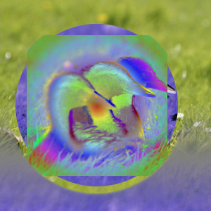
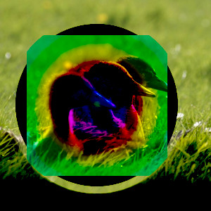
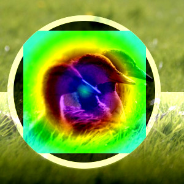
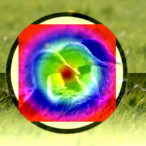
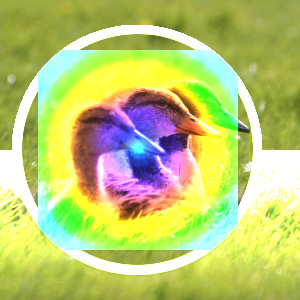

O grupo “Inversão” contém modos de camada que invertem as cores de uma forma ou de outra.
- Diferença
-
O modo Diferençasubtrai o valor do pixel da camada superior da camada inferior e, em seguida, toma o valor absoluto do resultado. Não importa a aparência das duas primeiras camadas, o resultado pode parecer bastante estranho. Você pode usá-lo para inverter os elementos de uma imagem, criando uma camada completamente branca no modo “Diferença” por cima, por exemplo.
Este modo é comutativo; não importa a ordem das duas camadas.
- Exclusão
-
Figura 8.32. Exemplo para o modo de camada “Super-exposição”

Camada superior em 100% de opacidade usando o modo “Exclusão”.
O modo Exclusão causa inversão na outra camada para regiões claras, regiões muito escuras não alteram nada. Desta forma, este modo se assemelha ao modo Diferença. No entanto, valores de cinza médio diminuem muito o contraste da outra camada respectiva, em casos extremos até zero.
Este modo é comutativo; não importa a ordem das duas camadas.
- Subtrair
-
Figura 8.33. Exemplo para o modo de camada “Subtrair”

Exemplo para o modo de camada “Subtrair”
O modo Subtrair subtrai os valores de pixel da camada superior dos valores de pixel da camada inferior. A imagem resultante é, normalmente, mais escura. Você pode ter um monte de preto ou uma imagem resultante quase preta. A equação pode resultar em valores negativos para as cores mais escuras, portanto, elas serão ajustadas para o valor mínimo de 0.
- Extrair grãos
-
Figura 8.34. Exemplo para a camada de modo “Extrair grãos”

Exemplo para a camada de modo “Extrair grãos”
O Modo Extrair grãos poderia extrair os “grãos do filme” de uma camada para a criação de uma nova camada que é composta só de grãos, mas também pode ser útil para dar as imagens uma aparência de relevo. Ele subtrai o valor do pixel da camada superior do pixel na camada inferior e adiciona 128.
- Mesclar grãos
-
Figura 8.35. Exemplo para o modo de camada “Mesclar grãos”

Exemplo para o modo de camada “Mesclar grãos”
O modo Mesclar grãos combina uma camada de grãos (possivelmente criada a partir do Modo “Extrair grãos” ) na camada atual, deixando uma versão granulada da camada original. Ele faz exatamente o oposto de “Extrair de grãos”. Ele adiciona os valores de pixels das camadas superior e inferior e subtrai 128.
- Dividir
-
Figura 8.36. Exemplo para o modo de camada “Dividir”

Exemplo para o modo de camada “Dividir”
O modo Dividir multiplica cada valor de pixel na camada inferior por 256 e depois divide pelo valor do pixel correspondente da camada superior mais um. (Ao adicionar um ao denominador evita-se a divisão por zero.) A imagem resultante é muitas vezes mais clara, e às vezes parece “queimada”.